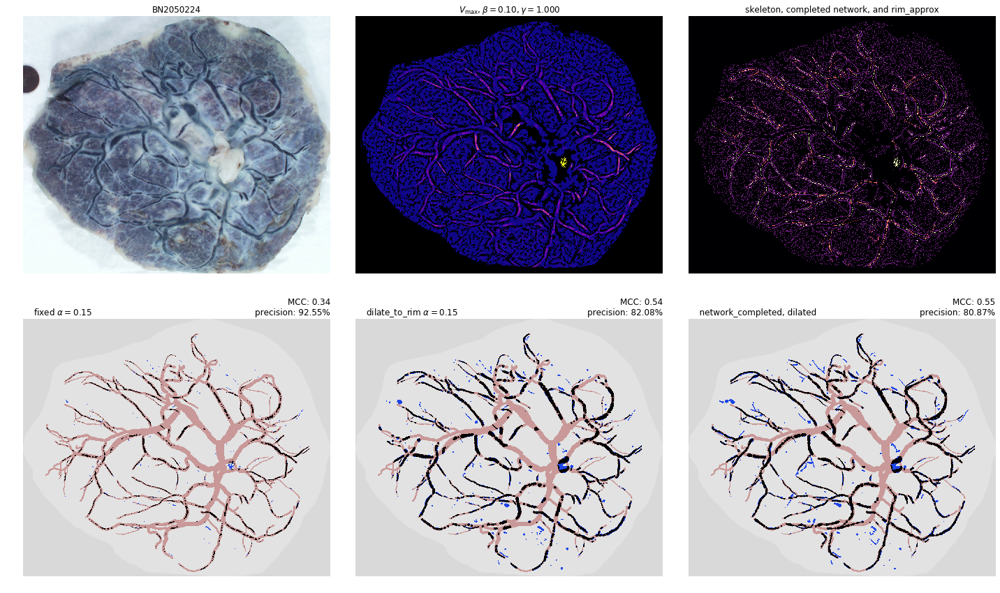
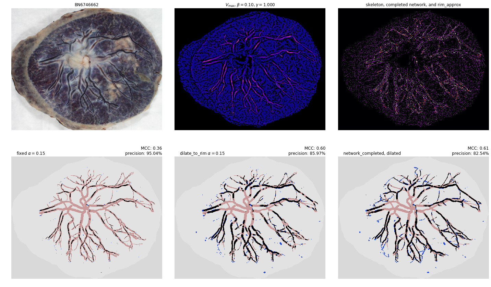
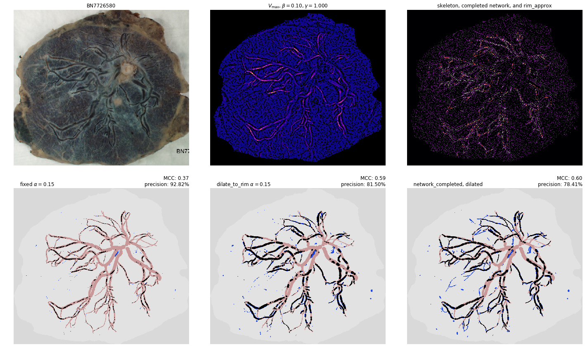

In [10]: run network_completion.py
---------------------------------------------------------------------------
NameError Traceback (most recent call last)
~/pycake/network_completion.py in <module>
419 crop = cropped_args(img)
420 ucip = open_typefile(filename, 'ucip')
--> 421 img = inpaint_hybrid(img)
422
423 # make the size of figures more consistent
NameError: name 'inpaint_hybrid' is not defined
In [11]: run network_completion.py
---------------------------------------------------------------------------
NameError Traceback (most recent call last)
~/pycake/network_completion.py in <module>
434 crop = cropped_args(img)
435
--> 436 ucip_midpoint, resolution = measure_ncs_markings(ucip)
437 ucip_mask = add_ucip_to_mask(ucip_midpoint, radius=60, mask=img.mask)
438
NameError: name 'measure_ncs_markings' is not defined
In [12]: run network_completion.py
---------------------------------------------------------------------------
NameError Traceback (most recent call last)
~/pycake/network_completion.py in <module>
436
437 ucip_midpoint, resolution = measure_ncs_markings(ucip)
--> 438 ucip_mask = add_ucip_to_mask(ucip_midpoint, radius=60, mask=img.mask)
439
440 name_stub = filename.rstrip('.png').strip('T-')
NameError: name 'add_ucip_to_mask' is not defined
In [13]: run network_completion.py
there are 1402 endpoints
checking compatibility of endpoints by labels and calculating distances
removed 941667 pairs of endpoints from consideration (out of 982101 possible pairs)
removed 38924 more pairs by avoiding crossings/zero score paths
/usr/lib/python3.7/site-packages/numpy/core/fromnumeric.py:2920: RuntimeWarning: Mean of empty slice.
out=out, **kwargs)
/usr/lib/python3.7/site-packages/numpy/core/_methods.py:85: RuntimeWarning: invalid value encountered in double_scalars
ret = ret.dtype.type(ret / rcount)
there are 1782 endpoints
checking compatibility of endpoints by labels and calculating distances
removed 1.52375e+06 pairs of endpoints from consideration (out of 1.58687e+06 possible pairs)
removed 60823 more pairs by avoiding crossings/zero score paths
---------------------------------------------------------------------------
KeyboardInterrupt Traceback (most recent call last)
~/pycake/network_completion.py in <module>
455 skel = thin(approx)
456 completed = connect_iterative_by_label(skel, Fmax, max_dist=100)
--> 457 completed_dilated = dilate_to_rim(completed, rim_approx, max_radius=10)
458 approx_dilated = dilate_to_rim(approx, rim_approx, max_radius=10)
459
~/pycake/postprocessing.py in dilate_to_rim(spine, rim, thin_spine, max_radius, return_radii)
106
107 dilation_stack = np.stack([binary_dilation(spine_radii==r, selem=disk(r))
--> 108 for r in range(1,max_radius+1)])
109
110 approx = dilation_stack.any(axis=0)
~/pycake/postprocessing.py in <listcomp>(.0)
106
107 dilation_stack = np.stack([binary_dilation(spine_radii==r, selem=disk(r))
--> 108 for r in range(1,max_radius+1)])
109
110 approx = dilation_stack.any(axis=0)
/usr/lib/python3.7/site-packages/skimage/morphology/misc.py in func_out(image, selem, *args, **kwargs)
37 if selem is None:
38 selem = _default_selem(image.ndim)
---> 39 return func(image, selem=selem, *args, **kwargs)
40
41 return func_out
/usr/lib/python3.7/site-packages/skimage/morphology/binary.py in binary_dilation(image, selem, out)
75 if out is None:
76 out = np.empty(image.shape, dtype=np.bool)
---> 77 ndi.binary_dilation(image, structure=selem, output=out)
78 return out
79
/usr/lib/python3.7/site-packages/scipy/ndimage/morphology.py in binary_dilation(input, structure, iterations, mask, output, border_value, origin, brute_force)
505
506 return _binary_erosion(input, structure, iterations, mask,
--> 507 output, border_value, origin, 1, brute_force)
508
509
/usr/lib/python3.7/site-packages/scipy/ndimage/morphology.py in _binary_erosion(input, structure, iterations, mask, output, border_value, origin, invert, brute_force)
243 if iterations == 1:
244 _nd_image.binary_erosion(input, structure, mask, output,
--> 245 border_value, origin, invert, cit, 0)
246 return output
247 elif cit and not brute_force:
KeyboardInterrupt:
In [14]: run network_completion.py
---------------------------------------------------------------------------
NameError Traceback (most recent call last)
~/pycake/network_completion.py in <module>
415 gamma = 1.0
416
--> 417 cm = mpl.cm.plasma
418 #cmscales = mpl.cm.magma
419 cm.set_bad('k', 1) # masked areas are black, not white
NameError: name 'mpl' is not defined
In [15]: run network_completion.py
---------------------------------------------------------------------------
NameError Traceback (most recent call last)
~/pycake/network_completion.py in <module>
415 gamma = 1.0
416
--> 417 cm = mpl.cm.plasma
418 #cmscales = mpl.cm.magma
419 cm.set_bad('k', 1) # masked areas are black, not white
NameError: name 'mpl' is not defined
In [16]: run network_completion.py
---------------------------------------------------------------------------
NameError Traceback (most recent call last)
~/pycake/network_completion.py in <module>
415 gamma = 1.0
416
--> 417 cm = mpl.cm.plasma
418 #cmscales = mpl.cm.magma
419 cm.set_bad('k', 1) # masked areas are black, not white
NameError: name 'mpl' is not defined
In [17]: run network_completion.py
there are 1402 endpoints
checking compatibility of endpoints by labels and calculating distances
removed 941667 pairs of endpoints from consideration (out of 982101 possible pairs)
removed 38924 more pairs by avoiding crossings/zero score paths
/usr/lib/python3.7/site-packages/numpy/core/fromnumeric.py:2920: RuntimeWarning: Mean of empty slice.
out=out, **kwargs)
/usr/lib/python3.7/site-packages/numpy/core/_methods.py:85: RuntimeWarning: invalid value encountered in double_scalars
ret = ret.dtype.type(ret / rcount)
there are 1782 endpoints
checking compatibility of endpoints by labels and calculating distances
---------------------------------------------------------------------------
KeyboardInterrupt Traceback (most recent call last)
~/pycake/network_completion.py in <module>
460 rim_approx = (Fneg > neg_threshold)
461 skel = thin(approx)
--> 462 completed = connect_iterative_by_label(skel, Fmax, max_dist=100)
463 completed_dilated = dilate_to_rim(completed, rim_approx, max_radius=10)
464 approx_dilated = dilate_to_rim(approx, rim_approx, max_radius=10)
~/pycake/network_completion.py in connect_iterative_by_label(arr, scores, max_iterations, max_dist)
227 continue
228 # if they are matchable, let's find the distance between them
--> 229 dist = _euclidean_distance(endlist[j], endlist[k])
230 if max_dist is not None:
231 if dist > max_dist:
~/pycake/network_completion.py in _euclidean_distance(p0, p1)
181
182
--> 183 def _euclidean_distance(p0,p1):
184 return np.sqrt((p0[0]-p1[0])**2 + (p0[1]-p1[1])**2)
185
KeyboardInterrupt:
In [18]: run network_completion.py
there are 1402 endpoints
checking compatibility of endpoints by labels and calculating distances
removed 941667 pairs of endpoints from consideration (out of 982101 possible pairs)
removed 38924 more pairs by avoiding crossings/zero score paths
/usr/lib/python3.7/site-packages/numpy/core/fromnumeric.py:2920: RuntimeWarning: Mean of empty slice.
out=out, **kwargs)
/usr/lib/python3.7/site-packages/numpy/core/_methods.py:85: RuntimeWarning: invalid value encountered in double_scalars
ret = ret.dtype.type(ret / rcount)
there are 1782 endpoints
checking compatibility of endpoints by labels and calculating distances
removed 1.52375e+06 pairs of endpoints from consideration (out of 1.58687e+06 possible pairs)
removed 60823 more pairs by avoiding crossings/zero score paths
there are 1703 endpoints
checking compatibility of endpoints by labels and calculating distances
removed 1.39535e+06 pairs of endpoints from consideration (out of 1.44925e+06 possible pairs)
removed 51994 more pairs by avoiding crossings/zero score paths
there are 1242 endpoints
checking compatibility of endpoints by labels and calculating distances
removed 736995 pairs of endpoints from consideration (out of 770661 possible pairs)
removed 32250 more pairs by avoiding crossings/zero score paths
there are 1567 endpoints
checking compatibility of endpoints by labels and calculating distances
removed 1.18495e+06 pairs of endpoints from consideration (out of 1.22696e+06 possible pairs)
removed 40299 more pairs by avoiding crossings/zero score paths

there are 1064 endpoints
checking compatibility of endpoints by labels and calculating distances
removed 542127 pairs of endpoints from consideration (out of 565516 possible pairs)
removed 22385 more pairs by avoiding crossings/zero score paths
there are 1401 endpoints
checking compatibility of endpoints by labels and calculating distances
removed 939519 pairs of endpoints from consideration (out of 980700 possible pairs)
removed 39534 more pairs by avoiding crossings/zero score paths
there are 1233 endpoints
checking compatibility of endpoints by labels and calculating distances
removed 720419 pairs of endpoints from consideration (out of 759528 possible pairs)
removed 37565 more pairs by avoiding crossings/zero score paths

there are 1794 endpoints
checking compatibility of endpoints by labels and calculating distances
removed 1.53522e+06 pairs of endpoints from consideration (out of 1.60832e+06 possible pairs)
removed 70815 more pairs by avoiding crossings/zero score paths
there are 1869 endpoints
checking compatibility of endpoints by labels and calculating distances
removed 1.69258e+06 pairs of endpoints from consideration (out of 1.74565e+06 possible pairs)
removed 50902 more pairs by avoiding crossings/zero score paths
there are 1319 endpoints
checking compatibility of endpoints by labels and calculating distances
removed 832851 pairs of endpoints from consideration (out of 869221 possible pairs)
removed 34941 more pairs by avoiding crossings/zero score paths
there are 796 endpoints
checking compatibility of endpoints by labels and calculating distances
removed 302545 pairs of endpoints from consideration (out of 316410 possible pairs)
removed 12993 more pairs by avoiding crossings/zero score paths
there are 1178 endpoints
checking compatibility of endpoints by labels and calculating distances
removed 665961 pairs of endpoints from consideration (out of 693253 possible pairs)
removed 26042 more pairs by avoiding crossings/zero score paths
there are 1089 endpoints
checking compatibility of endpoints by labels and calculating distances
removed 569902 pairs of endpoints from consideration (out of 592416 possible pairs)
removed 21415 more pairs by avoiding crossings/zero score paths
there are 1140 endpoints
checking compatibility of endpoints by labels and calculating distances
removed 613918 pairs of endpoints from consideration (out of 649230 possible pairs)
removed 34005 more pairs by avoiding crossings/zero score paths

there are 1131 endpoints
checking compatibility of endpoints by labels and calculating distances
removed 608100 pairs of endpoints from consideration (out of 639015 possible pairs)
removed 29800 more pairs by avoiding crossings/zero score paths
there are 1842 endpoints
checking compatibility of endpoints by labels and calculating distances
removed 1.63489e+06 pairs of endpoints from consideration (out of 1.69556e+06 possible pairs)
removed 58371 more pairs by avoiding crossings/zero score paths
there are 1223 endpoints
checking compatibility of endpoints by labels and calculating distances
removed 707938 pairs of endpoints from consideration (out of 747253 possible pairs)
removed 37998 more pairs by avoiding crossings/zero score paths

there are 1179 endpoints
checking compatibility of endpoints by labels and calculating distances
removed 658940 pairs of endpoints from consideration (out of 694431 possible pairs)
removed 34265 more pairs by avoiding crossings/zero score paths
there are 1552 endpoints
checking compatibility of endpoints by labels and calculating distances
removed 1.15248e+06 pairs of endpoints from consideration (out of 1.20358e+06 possible pairs)
removed 49377 more pairs by avoiding crossings/zero score paths

there are 1243 endpoints
checking compatibility of endpoints by labels and calculating distances
removed 741304 pairs of endpoints from consideration (out of 771903 possible pairs)
removed 29252 more pairs by avoiding crossings/zero score paths
there are 1131 endpoints
checking compatibility of endpoints by labels and calculating distances
removed 602783 pairs of endpoints from consideration (out of 639015 possible pairs)
removed 34987 more pairs by avoiding crossings/zero score paths
there are 1592 endpoints
checking compatibility of endpoints by labels and calculating distances
removed 1.21356e+06 pairs of endpoints from consideration (out of 1.26644e+06 possible pairs)
removed 51014 more pairs by avoiding crossings/zero score paths
there are 1026 endpoints
checking compatibility of endpoints by labels and calculating distances
removed 495966 pairs of endpoints from consideration (out of 525825 possible pairs)
removed 28625 more pairs by avoiding crossings/zero score paths
there are 963 endpoints
checking compatibility of endpoints by labels and calculating distances
removed 441583 pairs of endpoints from consideration (out of 463203 possible pairs)
removed 20700 more pairs by avoiding crossings/zero score paths
In [19]: mccs
Out[19]:
[('BN0164923', 0.39634416816682366, 0.6162048533297236, 0.640368414363352),
('BN0651415', 0.37497666082625125, 0.5793061296672064, 0.5743312126317507),
('BN1328016', 0.3980457700492146, 0.5969217420850106, 0.6028443745857611),
('BN1650687', 0.39587793955686335, 0.5807782937897287, 0.609992362468998),
('BN2050224', 0.3371628548597081, 0.5372903524349262, 0.5475568478939856),
('BN2095839', 0.3835227146723663, 0.5917085255264718, 0.597550007556631),
('BN2432252', 0.39237900674957277, 0.6223603404400818, 0.6263368064674818),
('BN4130351', 0.365869514887775, 0.5737135228542726, 0.5950720559184862),
('BN4384182', 0.3641075679723276, 0.5825955796768977, 0.6031657552625306),
('BN4569506', 0.34878282414545814, 0.5533530139732427, 0.5711548835270076),
('BN5280796', 0.3854884297896363, 0.5892953321323109, 0.5899766817114311),
('BN5961598', 0.3341581147200961, 0.5450346314688954, 0.5651591908235744),
('BN6028328', 0.38184694252206924, 0.5821662828683659, 0.5957103820138561),
('BN6238549', 0.39087860212846653, 0.6048100762967765, 0.5982538779598521),
('BN6746662', 0.36123899560237616, 0.5990422628587789, 0.6071915034452338),
('BN7531176', 0.4069986415286117, 0.6184754468072265, 0.6213711015191051),
('BN7646343', 0.3724355839878473, 0.5494807949416373, 0.5600275281934534),
('BN7726580', 0.36604416586739935, 0.588887535295467, 0.5997562565215152),
('BN7753462', 0.4017186981977154, 0.6146427914407125, 0.6107728683694681),
('BN7767693', 0.39506040261525827, 0.5623782155678669, 0.5598676285455425),
('BN8333878', 0.42966460097350656, 0.6043235589983876, 0.5896690757612499),
('BN8549337', 0.3835647760426299, 0.5573118927967182, 0.5651908816232829),
('BN8789191', 0.38505483364852117, 0.5897842622654669, 0.5969250627567901),
('BN8914395', 0.29908277132438926, 0.4894008804866594, 0.4925443857100353),
('BN9211170', 0.3976828049328048, 0.5893934587032318, 0.5940171699242278)]
In [20]: precs
Out[20]:
[('BN0164923', 0.9338449987486444, 0.8219747181414417, 0.8104133397704906),
('BN0651415', 0.902003402003402, 0.7918633712857539, 0.7424055355810325),
('BN1328016', 0.9305453356225983, 0.7985521482298801, 0.7665418980922483),
('BN1650687', 0.88624022589053, 0.7190542878326056, 0.7039604531173436),
('BN2050224', 0.9254637436762226, 0.820830768768859, 0.808692848933367),
('BN2095839', 0.9639255236617533, 0.8113297297297297, 0.7981951972040574),
('BN2432252', 0.9511915147619266, 0.8474760079626824, 0.8317512182755415),
('BN4130351', 0.9263772850053396, 0.8172456101534686, 0.7937146182741653),
('BN4384182', 0.9534092997610734, 0.8608296034609224, 0.8298676259365174),
('BN4569506', 0.8806316352930681, 0.7898566416908485, 0.7584974725466271),
('BN5280796', 0.9302982470715294, 0.8328622573958923, 0.8163045281141151),
('BN5961598', 0.9262218045112782, 0.8329170469282866, 0.8374015122272428),
('BN6028328', 0.9285749641142405, 0.8143868002512978, 0.8079404157187822),
('BN6238549', 0.9565832724616509, 0.8674200044752741, 0.8483249802163018),
('BN6746662', 0.9504115226337448, 0.8596897285124484, 0.8254242643915315),
('BN7531176', 0.9362435717625058, 0.8093571278284654, 0.7843158081076297),
('BN7646343', 0.8982794479107582, 0.7767561782447947, 0.7400862492800854),
('BN7726580', 0.9282096305801311, 0.8150385421115789, 0.7841383422778772),
('BN7753462', 0.9510429236338562, 0.8406267617955248, 0.8128824829652362),
('BN7767693', 0.8750292973327708, 0.7290922998470168, 0.7020035730632374),
('BN8333878', 0.9129894344313239, 0.800177064889074, 0.7731889306226946),
('BN8549337', 0.897047086991221, 0.7731467319261752, 0.72457937088515),
('BN8789191', 0.9072542236927859, 0.7805465596732767, 0.743081787403117),
('BN8914395', 0.8907715872104155, 0.7693549240620204, 0.7105791910544247),
('BN9211170', 0.9173927998165559, 0.80794932052723, 0.7825075075075075)]
In [21]: